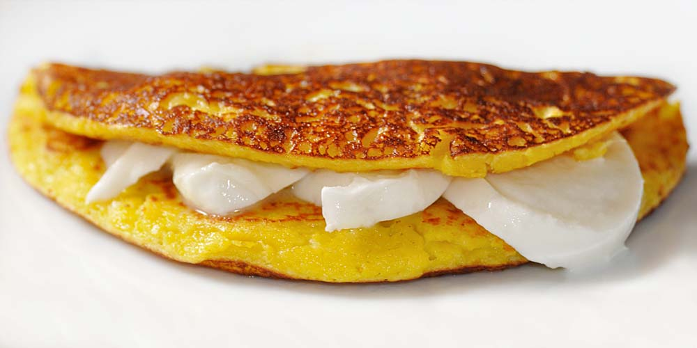

Cachapa

Description
Is a typical dish from Venezuela, The Cachapas are a sort of corn cake or rustic corn pancake, made with ground fresh corn kernels
Ingredients:
- 4 cups of fresh corn kernels (about 6 ears of corn)
- 1/4 cup of milk
- 1 tablespoon of sugar
- 1/2 teaspoon of salt
- Butter
- 2 8-ounce disk of queso de mano
Instructions:
- Save 4 tablespoons of corn kernels.
- Put the rest of the ingredients, except for butter and cheese, in a blender and blend until a thick paste forms.
- Add the rest of the corn kernels and stir. Press to liquefy for a few seconds so that you can feel the kernels when eating the cachapa.
- Let stand for about 5 minutes for the mixture to thicken.
- Preheat a frying pan, budare or comal over medium heat.
- When the pan is hot, add some butter to grease it.
- Make each cachapa using 1/3 cup of the mixture at a time, and making a circle of about 4 inches.
- Cook for 4-5 minutes and flip with a spatula. Cook for 3 more minutes until the cachapas are golden brown.
- Serve hot with butter and cheese: place a cachapa, cover it the cheese, and then top with another cachapa.